方式1 現行本番
いま本番で使っている音子音 160.0 ミリ秒 ／ 母音 42.7 ミリ秒 ／ モーラ 202.7 ミリ秒
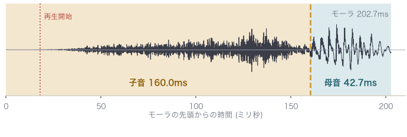
実際に鳴る長さ 185 ミリ秒
各行の左右を聴き比べ、どちらの音か分かるか・不自然でないかを判定してください。左が現行の本番プール（方式1）、右が候補プール uniform200（方式2）です。話者・音高・音量のそろえ方・鳴らす区間の決め方はすべて同じで、1モーラ0.2秒の中で子音と母音に時間をどう配るかだけが違います。方式1は子音の長さを合成器が返した値のまま残して母音で0.2秒に帳尻を合わせるので、子音の長い摩擦音では母音が痩せます。方式2は子音と母音を同じ倍率で伸縮するので、合成器が出した自然な比がそのまま保たれます。
再生は実験本番とまったく同じ処理です（音響的な立ち上がりからモーラ末尾まで・音量をそろえる増幅つき・両端8ミリ秒のフェード）。「続けて鳴らす」を押すと方式1→0.7秒あけて→方式2の順に鳴ります。図の横軸は全図共通で0〜210ミリ秒、縦軸（振幅）も全図共通なので、図どうしの波の高さの差はそのまま聞こえの大きさの差にあたります。
子音と母音の境目は、合成器に問い合わせた音素長を各方式で配り直し、合成器の格子（10.6667ミリ秒）に丸めた位置です。波形から目で拾った位置ではありません。モーラの合計が0.2秒ちょうどにならないのは、子音と母音が別々に丸められるためで、これは方式1でも同じです。
なお、時間の配分が同じ音（つ・ぽ・あ など）でも、2つの波形は完全には一致しません。音量をそろえる倍率がプール全体の中央値を基準に決まり、プールの中身が変われば中央値もわずかに動くためです。配分の同じ38音で測った差は最大 0.13 デシベル（び）で、聞き分けられる大きさではありません。配分そのものが変わった音は、聞こえの大きさが実際に変わるので倍率も変わります。

実際に鳴る長さ 185 ミリ秒
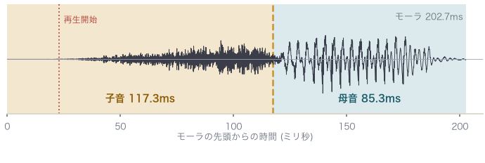
実際に鳴る長さ 180 ミリ秒
母音が +42.7 ミリ秒、子音が -42.7 ミリ秒動く。方式1で母音が最短(42.7 ミリ秒)。方式2で母音が最短(85.3 ミリ秒)。同じ長さの音が他に 1 音ある(す)。
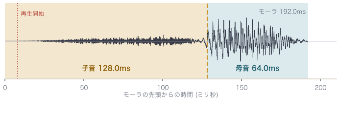
実際に鳴る長さ 184 ミリ秒
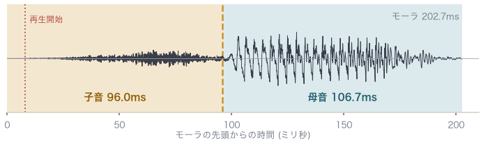
実際に鳴る長さ 195 ミリ秒
母音が +42.7 ミリ秒、子音が -32.0 ミリ秒動く。
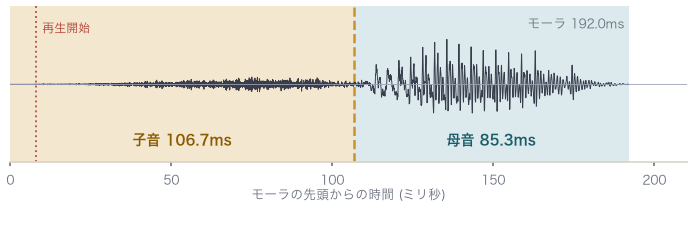
実際に鳴る長さ 184 ミリ秒
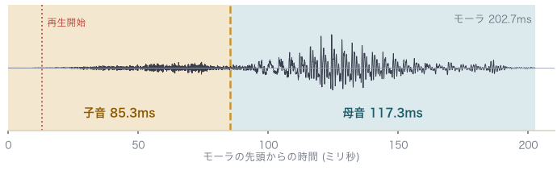
実際に鳴る長さ 190 ミリ秒
母音が +32.0 ミリ秒、子音が -21.3 ミリ秒動く。
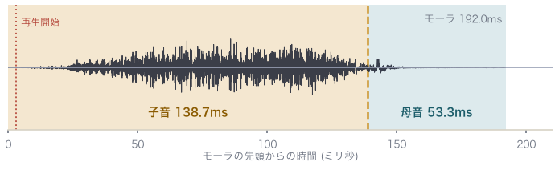
実際に鳴る長さ 189 ミリ秒
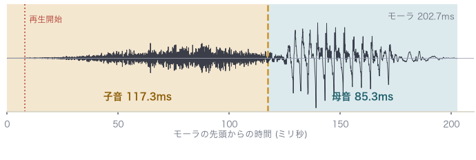
実際に鳴る長さ 195 ミリ秒
母音が +32.0 ミリ秒、子音が -21.3 ミリ秒動く。
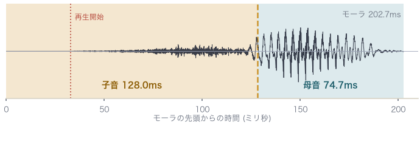
実際に鳴る長さ 170 ミリ秒
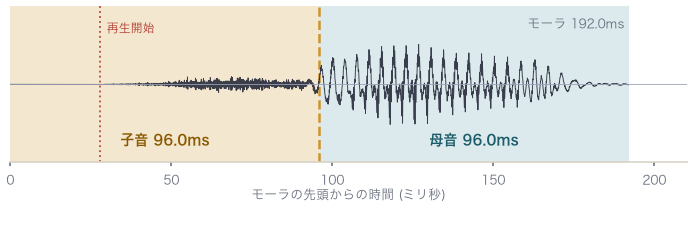
実際に鳴る長さ 164 ミリ秒
母音が +21.3 ミリ秒、子音が -32.0 ミリ秒動く。
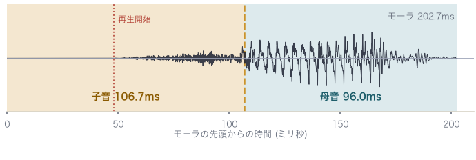
実際に鳴る長さ 155 ミリ秒
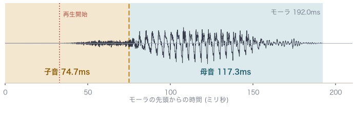
実際に鳴る長さ 159 ミリ秒
母音が +21.3 ミリ秒、子音が -32.0 ミリ秒動く。
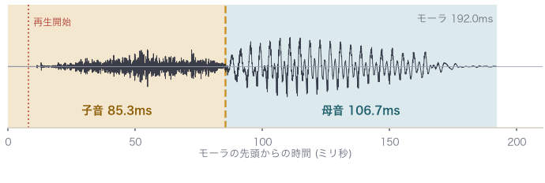
実際に鳴る長さ 184 ミリ秒
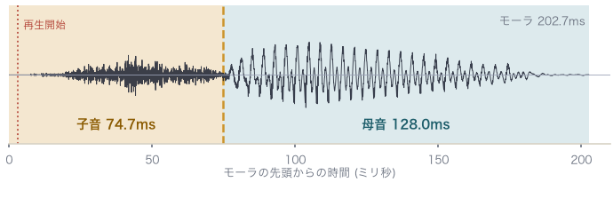
実際に鳴る長さ 200 ミリ秒
母音が +21.3 ミリ秒、子音が -10.7 ミリ秒動く。
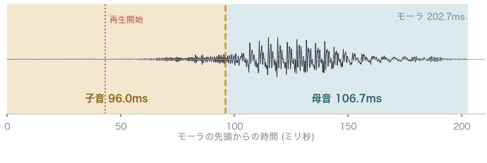
実際に鳴る長さ 160 ミリ秒
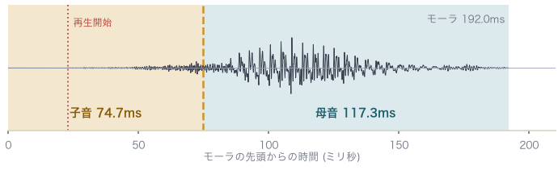
実際に鳴る長さ 169 ミリ秒
母音が +10.7 ミリ秒、子音が -21.3 ミリ秒動く。
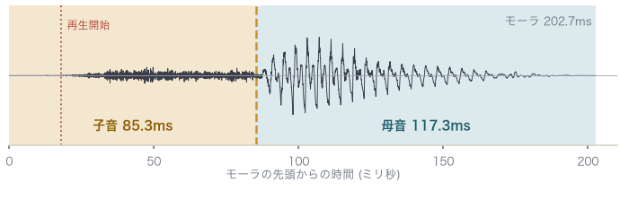
実際に鳴る長さ 185 ミリ秒
実際に鳴る長さ 185 ミリ秒
素のモーラ長がほぼ 0.2 秒なので、どちらの方式でも配分が同じになる。
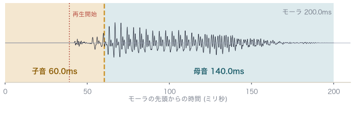
実際に鳴る長さ 161 ミリ秒
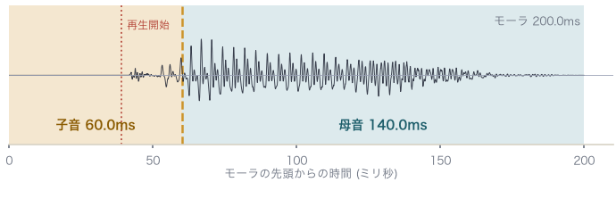
実際に鳴る長さ 161 ミリ秒
「オッポ」の文脈合成から切り出す処方で、配り方の規則をそもそも通らない。時間の配分は2つのプールでまったく同じ。
実際に鳴る長さ 195 ミリ秒
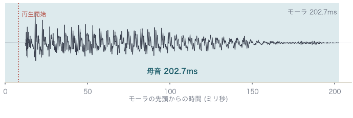
実際に鳴る長さ 195 ミリ秒
方式1で母音が最長(202.7 ミリ秒)。同じ長さの音が他に 5 音ある(い・う・え・お・ん)。方式2で母音が最長(202.7 ミリ秒)。同じ長さの音が他に 5 音ある(い・う・え・お・ん)。
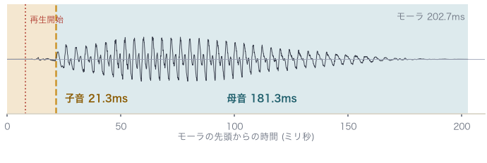
実際に鳴る長さ 195 ミリ秒
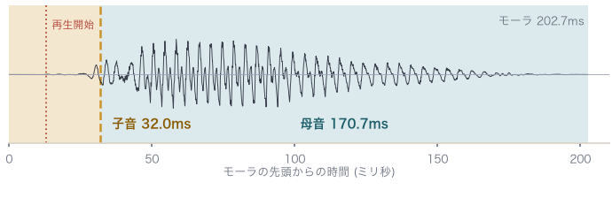
実際に鳴る長さ 190 ミリ秒
素のモーラ長が 0.2 秒より短く、伸ばす側にあたる音。母音が -10.7 ミリ秒。
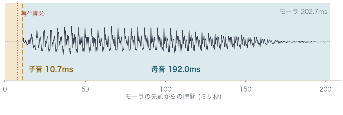
実際に鳴る長さ 195 ミリ秒
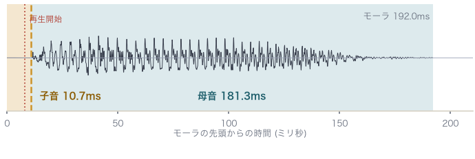
実際に鳴る長さ 184 ミリ秒
素のモーラ長が 0.2 秒より短く、伸ばす側にあたる音。母音が -10.7 ミリ秒。
| 言葉 | 意味 |
|---|---|
| モーラ | かな1文字ぶんの音。ここでは0.2秒に固定している |
| 子音の区間 | 「し」なら [ɕ] の摩擦、「た」なら破裂までの部分 |
| 母音の区間 | 声帯が鳴っている部分。ここが痩せると音色が確かめにくくなる |
| 再生の開始位置 | 実験では無音を飛ばし、レベルが一定値を超え続ける最初の点から鳴らす |
| 実際に鳴る長さ | 再生の開始位置からモーラ末尾まで。立ち上がりの遅い音ほど短くなる |
68音すべての数値は project/子音母音配分_方式比較.md。68音を1音ずつ聴くなら 現行（方式1）の点検モード と 方式2の点検モード。